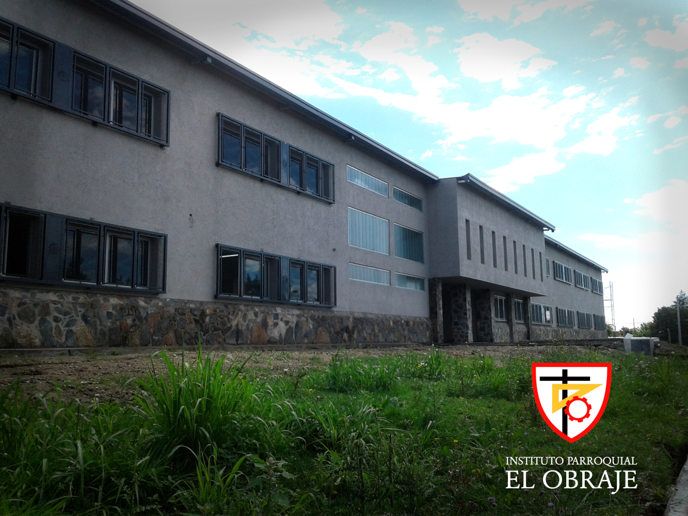

Sobre mí
| Nombre: | Juan Ignacio Zullo |
| Edad: | 18 |
| Ubicación: | Alta Gracia, Córdoba, Argentina |
| Nombre: | Juan Ignacio Zullo |
| Edad: | 18 |
| Ubicación: | Alta Gracia, Córdoba, Argentina |
Me contrataron a través de mi mamá como referencia para crear una página web que utilice el gremio para darse a conocer y presentarse ante la gente, mostrando el cómo funciona y qué beneficios obtienen.
Ya sea en forma de Trabajo Evaluativo o por voluntad propia, he tenido que realizar diferenters trabajos relacionados al colegio y la informática. Entre esos trabajos destaco el desarrollo de una página web para agilizar el trabajo de mi padre y la restauración de diferentes computadoras escolares.
Actualmente estoy cursando el último año de la secundaria en el Instituto Parroquial El Obraje, donde estoy obteniendo el título de Técnico en Informática. En el futuro me gustaría seguir mis estudios en la Universidad Tecnológica Nacional, en la carrera de Ingeniería en Sistemas de Información.